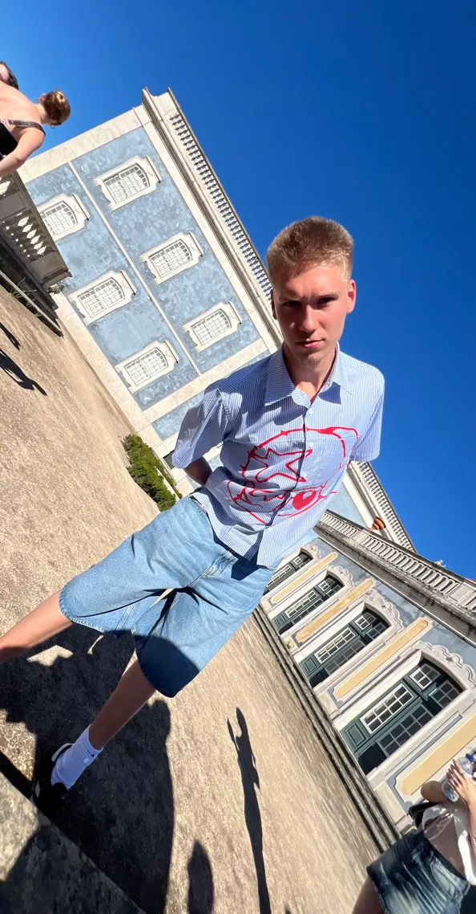
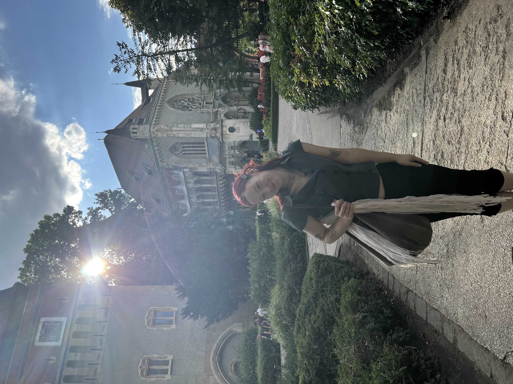
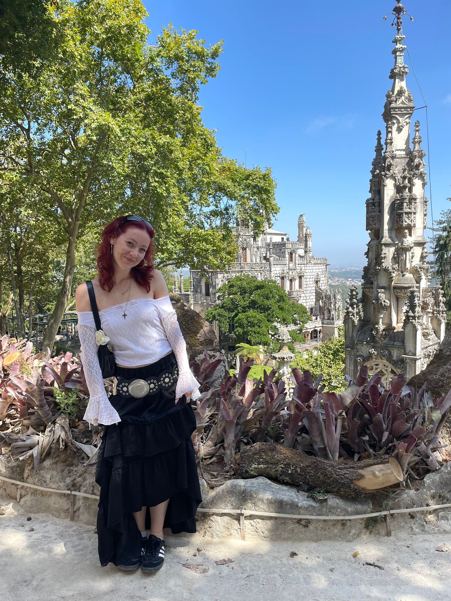

Jonah
Beijer.

Dit ben ik.
Hi, ik ben Jonah Beijer. Ik ben 22 jaar en een enthousiaste developer met een sterke passie voor het bouwen van webapplicaties en apps. Ik wil mezelf blijven ontwikkelen, of dat nu betekent dat ik nieuwe vaardigheden leer of bestaande verbeter. Ik kijk erg uit naar wat mijn stage te bieden heeft en alles wat ik onderweg kan leren.
Eigenschappen
- Vriendelijk
- Leergierig
- Loyaal
- Eerlijk
- Meedenkend
- Open-minded
Hobby’s


Werk
Albert Heijn
Albert Heijn - Vakkenvuller 2019/2022
Stena Line
Stena Line - Sjorder 2022/Heden
DIGIWEDO
DIGIWEDO - Developer 2026/Heden
Opleiding
Hogeschool Rotterdam Creative media & Game technologies